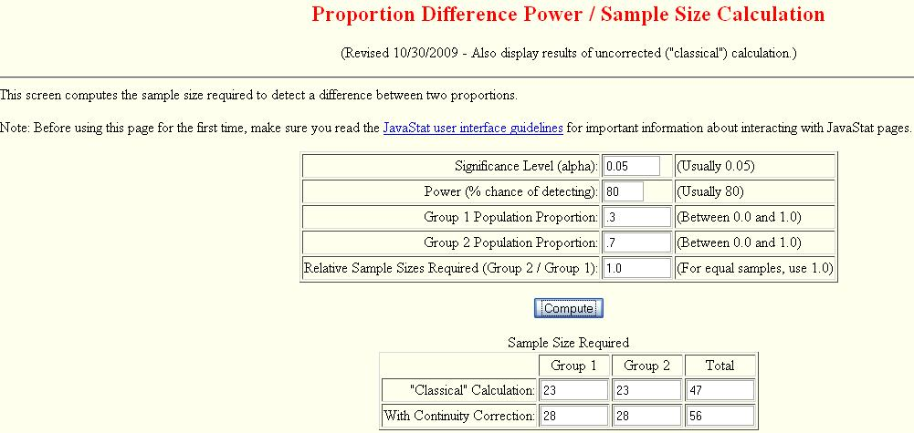
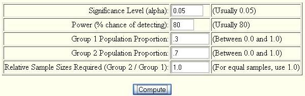
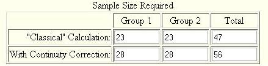

There are several sample size calculators available on the web. The following is one such calculator:
http://statpages.org/proppowr.html
Recall that Jill is interested in testing the effect of a treatment versus a control on prevention of a disease. Jill wants to know how many mice she needs in each group to achieve 80% power with a significance rate of 0.05. From a pilot study Jill has estimated that the proportion of the control group that didn't get the disease was 0.4, and the proportion of the treatment group was 0.6.
The following is an example of how Jill used the online calculator along with her results.
Example:

Zoomed In
Jill is interested in testing the difference between a treatment and a control group at a significance level of 0.05. She wants to obtain a power of at least 80%. From Jill's pilot data she estimated the population proportion of the treatment group to be 0.3 and the population proportion of the control group to be 0.7. She wants an equal number of mice to be in each group hence the relative sample sizes required is 1.0. Using this information Jill is able to fill out the table in the following way.

Results

Interpretation
From the above output Jill can see that in order to obtain 80% power she will need at least 23 mice in each group, however in order to use large sample techniques she will need at least 28 mice. Jill should keep in mind though that accidents happen and its probably best to use a few more mice than needed.
-- ErinEsp - 13 Mar 2010